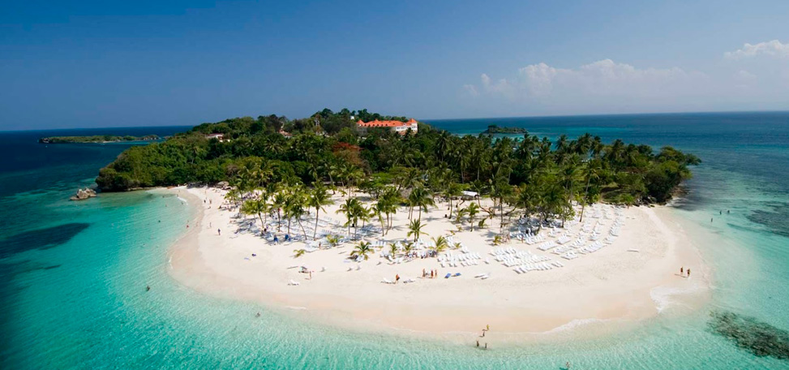
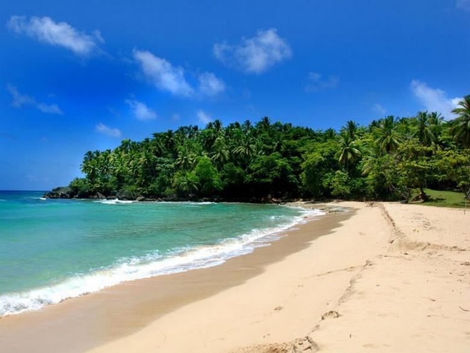

Región Norte de la República Dominicana
En la zona Norte se encuentra la comunidad de Río San Juan desde donde es posible tomar una excursión en barca a través de los manglares de la Laguna Gri-Gri y el Parque Nacional La Isabela, en Puerto Plata, en el cual se conservan restos de la estadía de Colón en la isla.
Para los que visitan Puerto Plata les recomendamos tomar el teleférico para apreciar desde lo alto de la Loma Isabel de Torres la belleza natural del entorno de la región.
El Parque Nacional Montecristi ubicado a 20 kilómetros de la ciudad de Montecristi cuenta con 530 kilómetros cuadrados de foresta y 7 pequeñas islas llamadas Los Cayos de los Siete Hermanos. Se encuentran en esta zona las reservas científicas de Isabel de Torres, Villa Elisa y Loma Quita Espuela.


